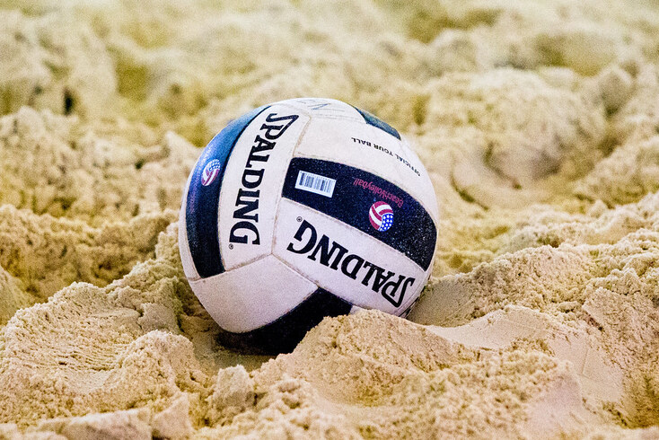
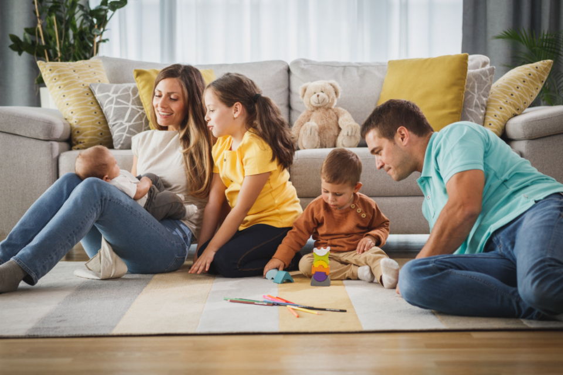

A Sport I Love
Volleyball

Volleyball is my all time favorite sport, and I have played it every since I was in middle school! My twin sister motivated me to play the sport, and I fell in love with it ever since. But during my senior year (basically the game before my senior night), I tore my ACL. I have yet to get it repaired, but in the meantime, I love to watch the sport and play safely on the sidelines. I played the following positions...
My Personality
Family

I value quality time, whether it is with my actual family, or with people who have grown to be part of my family. I consider quality time one of the most fundamental things in a person's life. Though many have their own experiences with their family, I believe that keeping in touch or spending time with them will help with lonliness, create unity, and everlating love and consideration within the family.